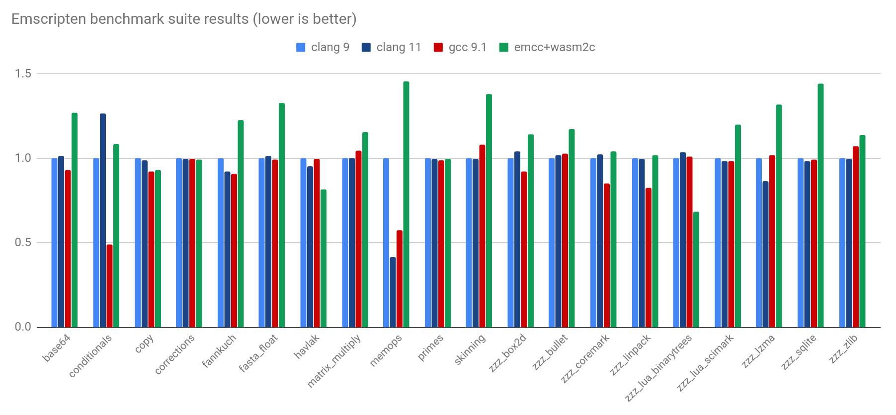

WebAssembly and the Elusive Universal Binary
June 2020

Background
The normal process of distributing binaries:
source |
↗ → ↘ |
Linux build Mac build Windows build |
→ → → |
Linux users Mac users Windows users |
Example: My Use Case
wasm-opt (part of binaryen) shrinks WebAssembly (wasm) files by around 20% on average.
Linux, Mac, and Windows x86_64 builds are used by toolchains like Emscripten (C++) and wasm-pack (Rust).
But some can't use them (e.g. ARM, BSD, special Linux), build infra takes work, sometimes tests only fail there, etc. :(
A "Universal Binary" is the dream of a single executable that runs everywhere and at 100% speed.
source |
→ |
single build |
↗ → ↘ |
Linux users Mac users Windows users |
In fact, it doesn't need to actually be a binary, so long as it's portable and fast!
Running Everywhere
First, let's distinguish two types of portability:
CPU portability concerns pure computation, lets you run your code no matter the CPU.
OS portability concerns APIs, and lets you print, access files, etc. no matter the operating system.
The Web has one of the best CPU + OS portability stories. CPU or OS-specific bugs are very rare! (browser-specific bugs are much more common...)
Anything non-portable is simply disallowed, and plugins are mostly a thing of the past.


Off the Web: Java, .NET, Python, Node.js, and other virtual machines (VMs) provide full CPU portability, and some amount of OS portability.
Some operations are OS-specific. Less portable, but more power, which sometimes you want when running your own code on your own server.


If we have C, C++, Rust, or Go — the family of languages that compile to executable code — what can we compile to for a VM?
All those can compile to WebAssembly which solves CPU portability! Now, which VMs support it?
Off the web there are various options:

Node.js APIs provides useful set of OS operations on things like files and processes (spawn, fork, etc.).
// No special sandboxing model; like Python etc.
// we get a reasonably-portable set of OS operations.
const fs = require("fs");
const data = fs.readFileSync("data.dat");
// Can provide imports to wasm that use these indirectly
// (just like on the Web).
WASM Runtimes: WASI APIs
The WebAssembly System Interface, meant for non-Web environments.
WASI is not just a bunch of familiar APIs brought to wasm! It is a new approach to writing an OS interface layer, a replacement for something like POSIX.
In particular WASI uses capability-based security and has stricter portability as well.
The Big Picture for APIs
WASI is supported on Node.js too, not just wasm VMs.
In the long term WASI will likely be the best option for the things it can support.
But WASI is still fairly new, designing a new OS API takes time, and the strict sandboxing will limit what can be done.
Switching gears
Let's get back to our concrete example, making a universal binary build for wasm-opt.
Compiling to WASM VMs?
wasm-opt needs only basic file operations, which WASI supports.
wasm-opt needs C++ exceptions or setjmp (for an internal wasm interpreter that helps optimize) which WASI does not support yet (wasm exception handling will fix that eventually).
Compiling to wasm on node.js?
Emscripten supports setjmp and C++ exceptions when building to wasm + JS, by calling out to JS:
↑ throw [js]
↑ bar() [wasm]
↑ try-catch [js]
↑ foo() [wasm]
↑ main() [wasm]
Works anywhere with wasm + JS, including on the Web and on Node.js!
Very easy to compile wasm-opt with emcc:
$ emcmake cmake .
$ make -j8 wasm-opt
Defaults are mostly ok, except Emscripten's output is designed to run in a browser, and is sandboxed. To get direct local file access in Node.js, use -s NODERAWFS,
$ emcmake cmake . "-DCMAKE_EXE_LINKER_FLAGS=-s NODERAWFS"
That's it!
Then it runs like a normal executable:
$ node wasm-opt.js input.wasm -O -o output.wasm
# (note the size improvement)
$ ls -lh input.wasm output.wasm
-rw-r--r-- 23K input.wasm
-rw-r--r-- 18K output.wasm
Great: Full CPU and OS portability!
28% slower — not bad for a portable build.
Not great: Compilation causes a startup delay of about 1 second, even for wasm-opt --help :(
The real solution for startup is wasm code caching, which works on the Web, but not yet on Node.js.
Node.js 12 had an API for code caching (in Emscripten we added -s NODE_CODE_CACHING) but that is not possible in Node.js 14+

Maybe we don't need wasm? JS starts up pretty fast...
Linking with -s WASM=0 tells Emscripten to emit JS instead of wasm (internally it uses wasm2js).
Speeds up startup by almost 2x! But throughput is 2x slower...
The story so far :(
- Can't yet do WASI since no setjmp support
- Can't yet do wasm on Node.js since startup is slower
- Can't yet do JS on Node.js since throughput is slower
Maybe we should wait until things improve?
wasm2c
Compiles wasm to C, part of wabt, written by binji
|
|
→ |
|
Full workflow:
original source → wasm → C → executable
Very easy to do!
# tell emscripten to use wasm2c
$ emcmake cmake . "-DCMAKE_EXE_LINKER_FLAGS=-s WASM2C"
$ make -j8
# build the output C normally
$ clang wasm-opt.wasm.c -O2 -lm -o wasm-opt
$ ./wasm-opt # runs like a normal executable!
Wait, isn't all this a little silly?
We started with C++, compiled
to wasm, then to C, which we still need to compile..?!
We've simplified what happens on the user's machine to the simplest possible compilation:
| Dev machine: | User machine: |
- There is a C compiler everywhere (source could be C++20, Rust nightly, etc.)
- Source's build system doesn't matter — single C file!
Startup is instantaneous, exactly like a normal executable!
Throughput is just 13% slower (half the overhead of the wasm from earlier) thanks to clang/gcc/etc.!
More Benchmarks

{kind=link}
Just 14% overhead on average!
A surprising speed benefit
wasm2c is 30% faster on lua-binarytrees, 20% on havlak! How can that be?
Wasm is a 32-bit architecture (so far). So on a 64-bit host, it's an easy way to get x32-like benefits: save memory with half-sized pointers!
APIs?
wasm2c itself is agnostic to APIs: wasm imports become calls to C functions you must provide.
wasm2c can be used with any wasm toolchain, if you make a C runtime with your imports.
In the Emscripten runtime for wasm2c we have impls of various WASI APIs and also e.g. setjmp and POSIX fopen — which is how we could run wasm-opt and all those benchmarks!
wasm2c: VM-less Wasm
100% as portable as wasm in a VM
(the C is portable C)
100% as sandboxed as wasm in a VM
(traps on out of bounds loads, etc.)
(for comparison, wasm2js has slightly different behavior than wasm on corner cases too slow for JS)
Current status of wasm2c
The C code builds on clang and gcc on all platforms, but need help with MSVC etc. (we use e.g. __builtin_ctlz atm).
Single C file isn't fast to compile with -O2.
Emscripten wasm2c runtime supports almost everything, but still missing e.g. C++ exceptions.
All of this is open source of course - help is welcome!
Conclusion
| Dev machine: | User machine: |
The wasm2c approach works surprisingly well:
- Easy to do on dev machine, thanks to wasm toolchains
- Easy to build on user machine, thanks to simple C
- Single universal C file for all CPUs and OSes
- Fast to start up and run
Conclusion (2)
In the long term Node.js, wasm VMs, and WASI will fix the issues we saw, and VMs will generally be the best option!
Yet even then a VM-less approach may be simpler for some things (but no time in this talk...)
Thank you!
Questions?